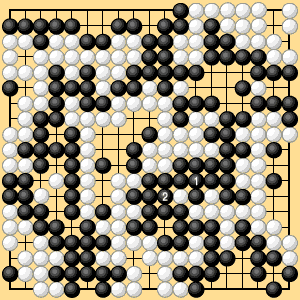

| 2.3.2 Connecting a Final Ko |
|---|
| Historically, this question arose in July 1948 in the first game of a ten-game match between Go and Iwamoto. The question is whether Black, who has more ko threats, has to play 1 or 2 in Dia. 2-4. The decision at the time was that White had won by "one or two points," but this unprecedented decision was later modified to state that White had won by one point, because it was found that the provisional Nihon Kiin rules then in use said, "When one player has more ko threats, that player does not have to eliminate a final ko at the end of the game." Still later the Nihon Kiin enacted its 1949 laws, according to which, "Reinforcement is required in a position that immediately becomes a direct ko." If that ruling is followed in the game between Go and Iwamoto, White wins by two points. |
|  |
| Dia. 2-4 |
|---|
|
Consider the simpler final-ko question in Dia. 2-5. There are no neutral points, and Black obviously has more ko threats. If it is White's move, White will either pass or play inside his own territory. If White plays inside his own territory then of course he loses a point, so Black can connect at 1 without suffering a net loss.
If we take this position, then when White passes in Dia. 2-5, if Black also passes, White still cannot play 1. The game therefore ends and the point at 1 becomes Black's territory.
|